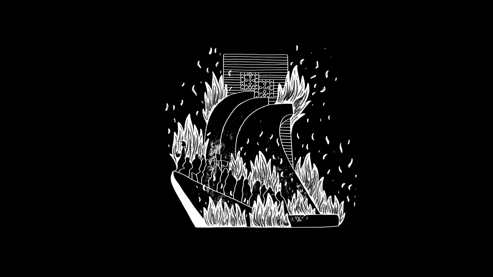
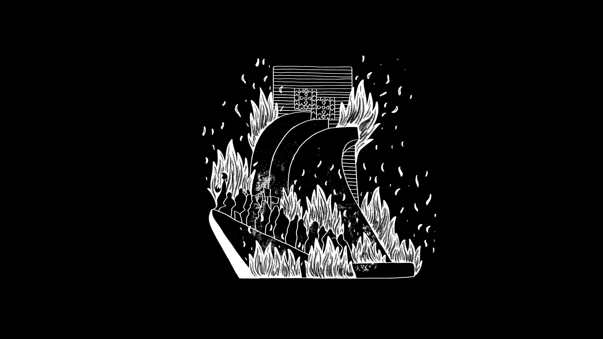

Memórias de Pau-Preto e Marfim
Uma curta-metragem de docuficção em animação sobre a Guerra Colonial e o “Retorno”, a partir de testemunhos reais. A partir da análise do luso-tropicalismo de Gilberto Freyre, da propaganda responsável pela manutenção da “política do espírito” do Estado Novo e do seu reflexo na identidade nacional saudosista e imperialista portuguesa, o ensaio pretende refletir sobre a história de um país que escolhe romantizar a miscigenação e “os descobrimentos”, esquecendo o papel que exerceu na história do tráfico escravocrata e da colonização.
A investigação parte de arquivos familiares e imagens vernaculares, transferidos intergeracionalmente, materializando-se num ensaio audiovisual que procura discutir criticamente, através de técnicas de animação e docuficção, a relação entre a memória e a narrativa colonial portuguesa, em especial a responsabilidade e capacidade da geração “pós-memória” em questionar estas narrativas.
Através da recolha de testemunhos orais, cartas, postais e fotografias, bem como de imagens de objetos coloniais que acompanharam a migração de milhares de portugueses das ex-colónias, o ensaio fílmico reúne a memória e história dos meus avós maternos, ex-colonos e retornados de Quelimane, Moçambique e do meu avô paterno, ex-combatente da Guerra Colonial em Angola.
O projeto relaciona fotografias do arquivo familiar, bem como documentação impressa que foi descoberta ao longo da investigação, imagens de propaganda do arquivo público e a animação, procurando estabelecer novas formas de ver o arquivo e dar a conhecer novas narrativas.
A relação entre os diferentes materiais pretende mostrar a complexidade e multiplicidade de histórias possíveis, procurando contar uma história mais alargada a partir das micro-narrativas.


 
